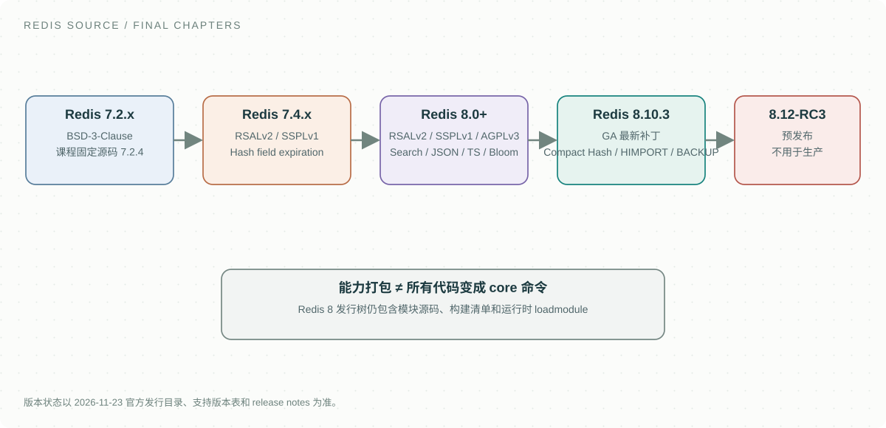
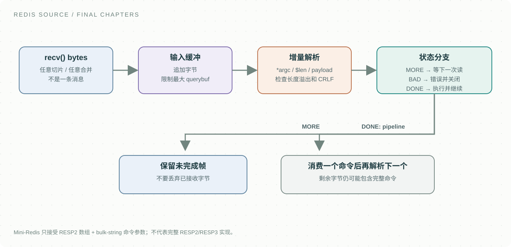
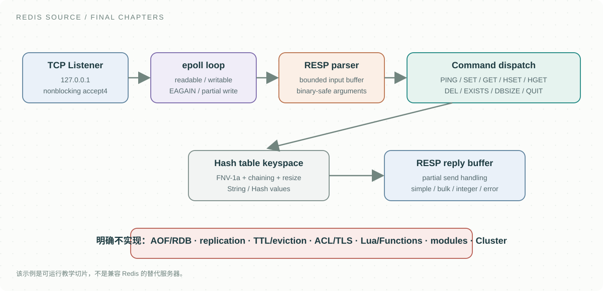

Chapter 28 / Redis Source Anatomy
Redis 8.10.3 与 Mini-Redis：版本演进、RESP 与事件循环
核对 Redis 8.10.3 GA、8.12-RC3 预发布状态、Stack 能力整合与许可证历史；从零构建有界、二进制安全、可测试的 RESP2 epoll Mini-Redis。
先把版本事实写清楚：8.10.3 是 GA，8.12-RC3 仍是预发布
本章版本状态以 2026-11-23 为截点。Redis 官方 release index 已发布 8.10.3（2026-10-26）；它属于 Redis 8.10 GA 系列的最新补丁版本。Redis 8.12 当前最新公开标签为 8.12-RC3（2026-11-12），但 Release Candidate 是预发布，官方说明不适合生产使用。教程中应把 GA 和 RC 明确分开，不能把 roadmap、PR 或 RC 的能力写成稳定版本承诺。

课程前 27 章以 Redis 7.2.4 源码为主要实现基线；本章版本演进比较使用 Redis 8.10.3 的官方 release notes、源码标签和模块发行清单。不同版本中的代码布局、默认构建方式、命令集合和许可证不能混用。
| 版本线 | 发行/状态 | 许可证与重要边界 |
|---|---|---|
| 7.2.x | Redis Open Source | BSD-3-Clause；本课程固定源码 7.2.4 |
| 7.4.x | Redis Community Edition | RSALv2 或 SSPLv1 |
| 8.0+ | Redis Open Source | RSALv2 / SSPLv1 / AGPLv3 三许可证选项 |
| 8.10.3 | GA 最新补丁（本章截点） | 安全修复与 8.10 功能集 |
| 8.12-RC3 | 预发布 | 不应当作生产 GA 版本 |
许可证对部署、修改、托管服务和再分发有实质影响；表格是版本史概览，不构成法律意见。实际采用前应阅读对应版本仓库中的 LICENSE 文件和官方许可证说明。
离线版本事实模型；上线选型请核对具体版本 LICENSE 与官方支持表。
Redis 8 的变化不只是版本号：Stack 能力进入统一发行包
Redis 8 的重要变化之一，是把此前以 Redis Stack 组件形式提供的 Search、JSON、Time Series 和 Probabilistic 能力纳入 Redis Open Source 发行体系。需要准确理解“纳入发行包”的含义：Redis 8.10.3 的源码树仍保留 modules/、modules.yaml 和模块构建/加载流程；官方模块 README 说明这些外部模块以固定源码版本构建，随后作为运行时模块加载。发行包整合并不等于所有模块实现都变成 server.c 中的核心命令。
Redis 8.10 的官方更新集中在数据结构效率、批量操作和运维能力：Compact Hash 让共享字段 schema 的多个 Hash 可共享字段模板；HIMPORT 面向高吞吐批量导入；BACKUP 基于 Multi-Part AOF 提供节点侧备份/恢复；LMOVEM/BLMOVEM 批量移动 List 元素；SUNIONCARD/SDIFFCARD 直接求集合运算基数；Streams 增加 MAXCOUNT/MAXSIZE 回复上限；JSONPath 和 Time Series 也扩展了表达能力。
| 方向 | Redis 8.10 代表变化 | 工程意义 |
|---|---|---|
| Hash | Compact Hash / HIMPORT | 同 schema 多 Hash 降低字段名重复开销 |
| 备份 | BACKUP / Multi-Part AOF | 节点侧增量备份与恢复流程 |
| List | LMOVEM / BLMOVEM | 一条命令批量移动多个元素 |
| Set | SUNIONCARD / SDIFFCARD | 只计算集合结果基数，减少返回数据 |
| Streams | XREAD / XREADGROUP MAXCOUNT / MAXSIZE | 限制聚合回复总条目数和字节数 |
| JSON / TS | JSONPath 扩展、TS.NRANGE / TS.READ 等 | 更多过滤、聚合和阻塞读取能力 |
| Modules API | 拓扑变化、fork child、通知后任务等 API 扩展 | 模块可以更精细地协调系统生命周期 |
另外，Hash field expiration 并不是 Redis 8 才出现：单个 Hash field 的过期能力在 Redis 7.4 已引入。Redis 8.10 的新增特性也不应与 8.12 RC 中的后续能力混写。原稿中“io_uring 后端预计带来 20–30% 吞吐提升”等缺少稳定官方版本依据的预测已删除。
补丁版本不是可忽略的尾数：安全修复属于版本选择的一部分
Redis 8.10.3 的官方 release notes 将该版本标记为 SECURITY，并修复了 Cluster 模式传播超大 PUBLISH/SPUBLISH 消息时的 heap buffer overflow。8.10.1、8.10.2 也包含多项安全修复。由此可见，教程不能只讲 8.10.0 的功能亮点而忽略补丁版本；生产选型应检查当前维护分支的最新安全补丁、升级兼容性和官方支持周期。
8.12-RC3 虽然比 8.10.3 更新，但仍是预发布版本。RC 适合测试兼容性、验证候选功能、提前发现升级风险；除非组织有明确的预发布验证流程，否则不能把 RC 当成正式生产推荐版本。
# 先记录实际版本和构建信息
redis-server --version
redis-cli INFO server | grep -E 'redis_version|redis_git_sha1|redis_build_id'
# 对照官方 release notes 与支持版本表，再制定升级窗口
# 不要仅因某个 RC tag 更新就跳过 GA 安全补丁。版本升级还要验证模块版本矩阵、RDB/AOF 格式兼容、命令行为、Cluster 节点升级顺序和回滚方案。Redis 8 的模块版本号与 Redis Open Source 版本线有更紧密的发布协调，不能继续假设每个 Stack 模块都可随意搭配不同 major 版本。
RESP：TCP 是字节流，解析器必须增量消费
Mini-Redis 最值得实现的部分不是一个 SET 函数，而是一个能正确处理 TCP 字节流的协议解析器。TCP 不保留应用层消息边界：一次 recv() 可能只拿到一个 RESP frame 的前半段，也可能一次拿到多个 pipelined 命令。把一次 read 等同于一条命令，会在网络分片、合并和高并发下产生协议错误。
本例只支持 RESP2 命令请求的常见编码：数组头 *argc\r\n，随后每个参数都是 bulk string $len\r\n...\r\n。解析器维护每个客户端的输入缓冲，遇到不完整帧返回 MORE 并保留字节；完整帧返回 DONE 并消费精确长度；非法长度、超限或 CRLF 错误返回 BAD 并关闭连接。处理完一个命令后继续检查缓冲剩余内容，以支持 pipeline。

真实 RESP2 还有 simple string、error、integer、bulk string、array 等回复类型；RESP3 又增加 map、set、double、boolean、attribute、push 等类型。Mini-Redis 只解析命令数组中的 bulk-string 参数，并只生成 simple/error/integer/bulk/null 回复；这是一块清楚标注边界的协议子集，不是完整 RESP 实现。
交互展示解析状态，不会连接真实 Redis。
Mini-Redis 架构：把一个 Redis 请求拆成可验证的小模块
教学服务器采用 Linux 非阻塞 socket 和 epoll：listener 通过 accept4() 接受连接；每个 client 维护输入缓冲、输出缓冲和发送游标；可读事件触发循环 recv() 直到 EAGAIN，再增量解析 RESP；命令分派访问一个拉链法哈希表；回复写入输出缓冲，由可写事件处理 partial send。

实现中的哈希函数采用教学用 FNV-1a，桶使用链表并在负载因子过高时扩容；这并不是 Redis 7.2.4 的 dict.c。Redis 的字典还涉及 SipHash、渐进式 rehash、迭代器和安全策略；Redis 的事件层 ae.c 也抽象 epoll/kqueue/select 等后端。Mini-Redis 只展示“非阻塞 I/O + 事件分派 + 有界解析 + 命令执行”的主线。
编译、运行与测试：让协议边界在自动化测试中暴露
仓库中的 mini-redis.c、Makefile 和 test_mini_redis.py 构成一套可运行的 Linux 教学实验。测试不依赖 Redis Python 客户端，直接构造 RESP frame 并通过 TCP socket 发送。
cd examples/mini-redis
make
make test
./mini-redis 6380
# 另一个终端：
redis-cli -p 6380 PING
redis-cli -p 6380 SET hello world
redis-cli -p 6380 GET hello
redis-cli -p 6380 HSET user:1 name Ada city Tokyo
redis-cli -p 6380 HGET user:1 city集成测试覆盖：命令被分成多个 TCP 写入时的增量解析；多个命令在一个 socket write 中 pipeline；key/value 含 NUL、CRLF 和非 UTF-8 字节时仍然二进制安全；String/Hash 类型冲突返回 WRONGTYPE；超出 bulk 长度限制的帧被拒绝。CI 会编译 C 程序并运行这些测试。
Mini-Redis 与 Redis 的差距必须显式列出来
本例是一个可运行的协议和事件循环切片，不是生产缓存服务器。它只实现 PING、ECHO、SET、GET、HSET、HGET、HLEN、DEL、EXISTS、DBSIZE 和 QUIT；只绑定 127.0.0.1，并对输入、bulk string 和输出设置固定上限。它没有认证/ACL、TLS、RESP3、inline protocol、事务、Lua/Functions、Module、Pub/Sub、Streams、过期、淘汰、RDB/AOF、复制、Cluster、Sentinel、I/O threads 或崩溃恢复。
| 子系统 | Mini-Redis | Redis 7.2.4 |
|---|---|---|
| 事件循环 | Linux epoll 单后端 | ae 抽象多路复用后端 |
| 协议 | RESP2 命令数组 + bulk 参数子集 | RESP2/RESP3 与完整请求/回复类型 |
| Keyspace | FNV-1a 链地址哈希 | dict / SipHash / 渐进式 rehash |
| 数据类型 | String / 简单 Hash | 完整原生类型与编码转换 |
| 输出 | 单客户端有界缓冲与 partial send | 客户端回复缓冲、限流、I/O threads 等 |
| 持久化/复制 | 无 | RDB / AOF / PSYNC / Cluster |
| 安全 | loopback，无认证 | ACL、TLS、保护模式与部署控制 |
不要把这个实验监听地址改成 0.0.0.0 后暴露到公网；它没有认证、访问控制和生产级资源隔离。想继续扩展，可以按顺序添加 TTL/过期字典、AOF append/replay、事务队列、RESP3、慢客户端输出限制，再逐一为每个状态机补充测试，而不是一次性把 Redis 的功能列表都堆进来。
全课程收束：从字节、事件、命令到可运行的系统模型
Redis 的工程设计可以沿一条请求路径串起来：TCP 字节进入客户端缓冲，RESP parser 形成命令参数，命令表找到 handler，数据结构完成读写，回复缓冲返回客户端；写入还会影响复制、持久化、过期、淘汰、监控和模块回调。Lua/Functions 与 MULTI 在命令执行层增加原子工作单元；Module API 允许原生扩展数据类型与命令；Redis 8 则把更丰富的能力和模块生态纳入统一发行体系。
手写 Mini-Redis 的意义不是重造 Redis，而是亲手验证 TCP 分片、协议解析、事件循环、二进制安全、命令状态和内存边界。一个可靠的系统不是因为功能多，而是因为每个状态转换、错误路径和资源生命周期都能被解释、测试和审计。
官方资料、版本标签与源码依据
版本演进依据为 Redis 8.10.3 官方源码标签和 release notes；8.12 RC 状态依据官方 release notes 与发布标签。Mini-Redis 的协议范围依据 RESP 规范，Redis 7.2.4 源码只用于对比早期事件循环和数据结构实现。
源码与参考
正文中的实现事实均标明版本。官方文档用于核对公开语义，固定版本源码用于核对具体实现。